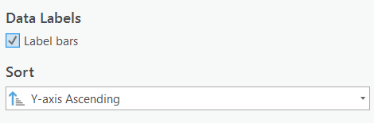

Geospatial Analysis
Table of contents
Automating with Model Builder
We are going to use a tool called Model Builder to organize and save all of our analysis steps in one place. When we use model builder, if any of our inputs or parameters change, a model can be easily adjusted and rerun at any time. It also allows us to visualize our analysis process. This is useful both for editing our own work and sharing it with others.
- For a more detailed explanation of Model Builder, check out this link.
Identify the Inundation Zone
Our criteria for land areas at risk for flooding are:
- Land at or below 10 m elevation and within 1km of the coastline.
I have created a model to do this part for you. In order to identify the land areas in Port Alberni at risk for inundation, the model is set up to do four tasks:
1 Reclassify the PA_DEM to identify all the areas under 10m elevation. See this link for info on the Reclassify tool.
2 Convert the reclassified DEM to a polygon. See this link for info on the Raster to Polygon Tool.
3 Buffer the waterbodies by 1km. See this link for info on the buffer tool.
4 Clip the coastline buffer with the inundation zone. See this link for an explanation of the Clip tool.
Watch the video below to see how I set the model up with an explanation of what it is doing.
Using the Model Yourself
1 Right click the InundationZone model and click “Edit”. The model will open in a new window, next to your map. The elevation threshold in the relassify is set to 5m, but we want to set it to 10 for our analysis.
2 Change the break values in the Reclassify to from 5 to 10 and run the model.
- Right click on Reclassify in the InundationZone and select Open
- Change the break value to 10
Create Your Own Model
We have four questions we want to address:
1 Which roads are at risk of flooding or damage?
2 Which properties in the city are at risk?
3 How many people within Port Alberni and the surrounding area are potentially living in areas at risk?
4 Are the Tsunami Shelters sufficient?
Clip the Roads Layer
To answer question 1 all we need to do is clip the roads by the inundation zone. Follow the video below to create a new model and clip the roads layer.
A Use the PA_Roads as the Input Feature
B Use the InundationZone as the Clip Feature
C Name the output PA_Roads_Flood.
D Once you have the output, Open the attribute, of PA_Roads_Flood, click right Click Shape_Length » Statistics. Take note of the total length of roads vulnerable to flooding (be mindful of the units). This is the answer to a quiz question number 6.
Select Properties by Location
To answer 2 we can use select by location. See the video below for an explanation of the select by location and instructions on how to apply it in your model.
A Use the Properties as the Input Feature
B Use the InundationZone as the Selecting Feature
C Selections are temporary, you have to use the copy features tool to make the selection permanent. Name the output of the copy Properties_at_Risk. Hint If you check label bars, and sort by the y-axis, it can make your chart easier to interpret.
- Take note of how many residential (Sum of Residential and Multi-Family Residential) properties are at risk of flooding, this is the answer to a quiz question 7.

Select Properties by ZoneName and Intersect Population Data
To answer 3, the process is a bit more complicated. If we simply clip the DAs by the Inundation Zone, we’ll end up with a significant overestimate. Its best to overestimate when doing hazards analysis if you can’t avoid it, but we need our results to be realistic. We will use three steps to estimate the maximum number of people who may be displaced.
A Select just residential and multi-family residential properties.
- Select by Attribute where:
- “ZoneCode is equal to Multi-Family Residential OR ZoneCode is equal to Multi-Family Residential”
- Copy the features to save the selection as Residential_at_Risk. Hint The number of rows in Residential_at_Risk should match your calculations of the number of residential properties you got from the bar chart you created in the last step.
B Intersect Population_Data with the Selection.
- Input order with the intersect does not matter, because its the combined overlap of both layers.
C Dissolve the Intersection.
- Set Dissolve Field to spatial_id
- Choose the Statistics Fields, this will give us statistics for the aggregation.
- Population - First
- Households - First
- ZoneName - Count
- Set the output name to Population_at_Risk
D Add and Calculate a Field to approximate the number of people in the inundation zone. The way we are going to do this is calculate the average # of people per household in each DA, times the number of properties at risk (assumed one household = one property).
- Add a field Pop_at_Risk
- Calculate the field
- !COUNT_ZoneName!*!FIRST_Population!/!FIRST_Households!
- The above equation takes then number of properties (!COUNT_ZoneName!)
- Multiples it by the average household size (!FIRST_Population!/!FIRST_Households!)
- This is just a rough estimate, obviously its flawed, and you’d want a more accurate approach if you were doing this in real life, but this is just for illustrative purposes, so its OK.
Select Shelters by Location
To answer 4, we can use select by location again. A shelter is only viable if its more than 150 meters away from the inundation zone. Follow the video below to get setup.
A Select Shelters by location
- Set Input Feature to Shelter
- Set Relationship to “Within a distance”
- Set Selecting Feature to InundatonZone
- Set Search Distance to 150 meters
- Check Invert Spatial Relationship
B Copy the Feature
- Name the output Shelters_Accepted